Cancellation Player Class¶
This section will describe a player who has a complex internal state that can be modeled using existing library classes.
In Cancellation Player Analysis we’ll look at what this player does.
We’ll turn to how the player works in PlayerCancellation Design.
In Cancellation Player Deliverables we’ll enumerate the deliverables for this player.
Cancellation Player Analysis¶
One method for tracking the lost bets is called the “cancellation” system or the “Labouchere” system.
The bets are designed around an ascending sequence of
values, 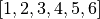. The sum, 21, is the total budget.
Each bet will be a multiple of the table minimum,  .
The core principle is to bet on the sum of the numbers at the end
of the sequence.
.
The core principle is to bet on the sum of the numbers at the end
of the sequence.
In this example, the end values of of the sequence are 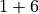, leading the player to bet 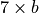.
On a win, the player cancels the two numbers used to make the bet. In the event that all the numbers are cancelled, the player has doubled their money, and can retire from the table happy.
For each loss, however, the player adds the amount of the bet to the end of the sequence; this is a loss to be recouped. The next bet is designed to recoups the most recent loss and provide a small gain. Multiple winning bets will recoup multiple losses, supplemented with small gains.
Example. Here’s an example of the cancellation system using a budget of 21 times the base bet, decomposed to .
Bet . A win. Cancel 1 and 6, leaving 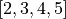.
Bet 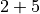. A loss. Add 7, leaving 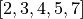.
Bet 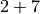. A loss. Add 9, leaving 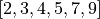.
Bet 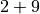. A win. Cancel 2 and 9, leaving 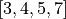.
Next bet will be 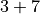.
State. The player’s state is the list of multipliers. This list grows and shrinks; when it is empty, the player leaves the table. The bet amount will be the first and last elements of this list. Wins will remove elements from the collection; losses will add elements to the collection.
Note
Alternative Budgets
The system of betting shown above can involve large numbers, since the betting starts at the table minimum. The numbers are smaller when working with a list of smaller numbers.
Consider a starting list of 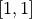. The bet is 2. A win cancels both numbers and resets the betting.
A loss, however, appends the bet to the sequence, leaving us with 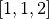. The next bet becomes 3.
A win will leave one uncancelled value, this can be dropped, the list reset to , and betting can resume.
A subsequent loss appends 3, leaving us with 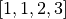. The next bet becomes 4.
Almost any starting sequence will work as long as the values are positive integers.
PlayerCancellation Design¶
-
class
PlayerCancellation¶ PlayerCancellationuses the cancellation betting system. This player allocates their available budget into a sequence of bets that have an accelerating potential gain as well as recouping any losses.
Fields¶
-
PlayerCancellation.sequence¶ This
Listkeeps the bet amounts; wins are removed from this list and losses are appended to this list. THe current bet is the first value plus the last value.
Constructors¶
-
PlayerCancellation.__init__(self, table: Table) → None¶ This uses the
PlayerCancellation.resetSequence()method to initialize the sequence of numbers used to establish the bet amount. This also picks a suitable even moneyOutcome, for example, black.
Methods¶
-
PlayerCancellation.resetSequence(self) → None¶ Puts the initial sequence of six values,
[1, 2, 3, 4, 5, 6]into thesequencevariable. The sequence[1, 1, 1, 1, 1, 1]will also work, and the bets will be smaller.
-
PlayerCancellation.placeBets(self) → None¶ Creates a bet from the sum of the first and last values of
sequenceand the preferred outcome.
Cancellation Player Deliverables¶
There are three deliverables for this exercise.
The
PlayerCancellationclass.A unit test of the
PlayerCancellationclass. This test should synthesize a fixed list ofOutcomeinstances,Bins, and calls aPlayerCancellationinstance with various sequences of reds and blacks. There are 16 different sequences of four winning and losing bets. These range from four losses in a row to four wins in a row. This should be sufficient to exercise the class and see the changes in the bet amount.An update to the overall
Simulatorclass that uses thePlayerCancellationclass.
Looking Forward¶
In the SevenReds subclass of Player, the state was a simple
count. In the Player1326 subclass, the state was a more complex
hierarchy of classes. In this case, a built-in list object could
maintain the player’s state.
In the next chapter we’ll look at one more way to maintain state of a player,
using a pair of integer values.